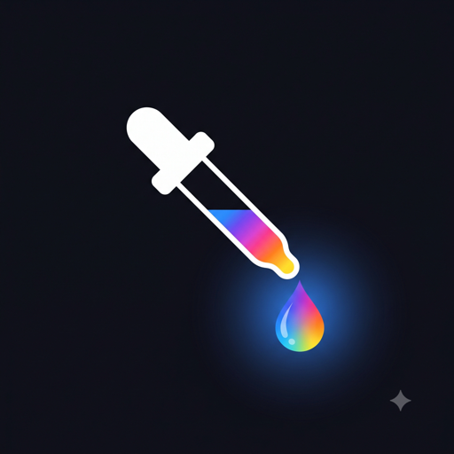

Swatchr: Color Picker
Pick any color from your camera or photos. Copy hex, RGB, HSL, and CMYK in one tap.
Download on the App Store
Key features
-
Live camera picker
Drag the crosshair over anything in view and watch the color sample update live.
-
Pick from photos
Tap any point in a saved photo to lift its exact color.
-
Every format, one tap
Hex, RGB, HSL, and CMYK are all shown at once — tap any of them to copy.
-
Save, widget, export
Unlock an unlimited saved palette, a Home Screen widget for your last color, and shareable export cards.